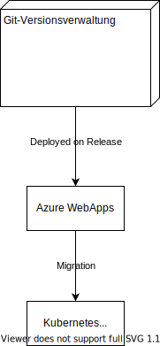
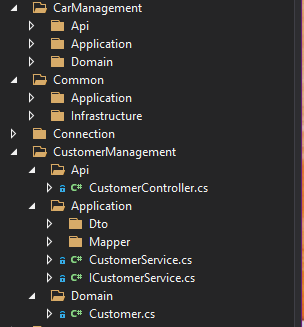

4+1
Deployment View

Bei einem Release soll die App automatisch via Azure ausgespielt werden und Migrationen an der Datenbank vorgenommen werden. Dieser Workflow ist noch nicht erstellt.
Weitere Informationen zu Deployment mit Github Actions
Logical View
Container Diagram
Klassendiagram
Implementation View
Die Struktur des Source Folders:
- CarManagement
- CustomerManagement
- ReservationManagement
- InvoiceManagement
- Common
Common
In dieser Namespace befinden sich alle Klassen welche von mehrer "Managements" verwendet wird. Hier befindet sich auch das generische Repository.
Aufbau Management / Common
Api
Hier befinden sich die Controller für die API.
Application
In diesem Namespace befinden sich die Services / Mapper und DTO's welche in diesem Management Bereich verwendet werden.
Domain
Hier befinden sich die Domain-Models für den Namespace Bereich
Infrastructure
Wird im Management Bereich noch nicht benötigt, hier könnte aber zum Beispiel ein Repository überschrieben bzw. erweitert werden.
